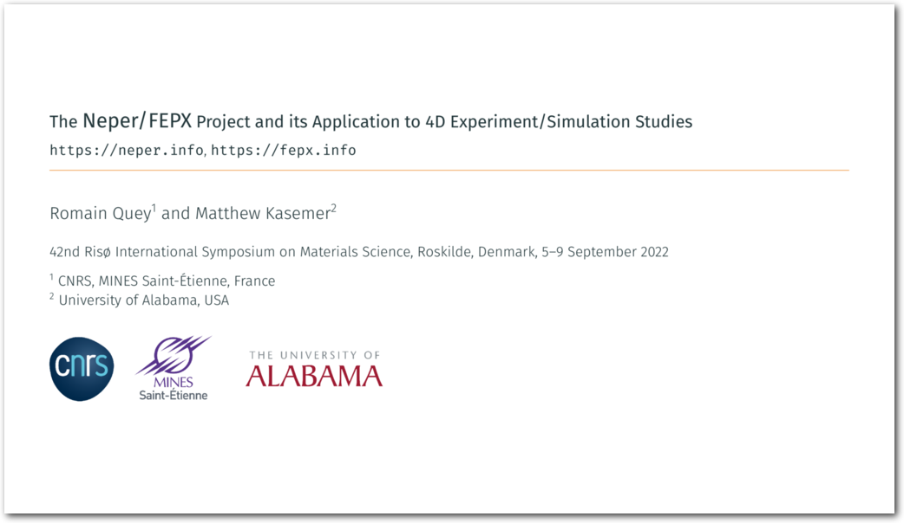
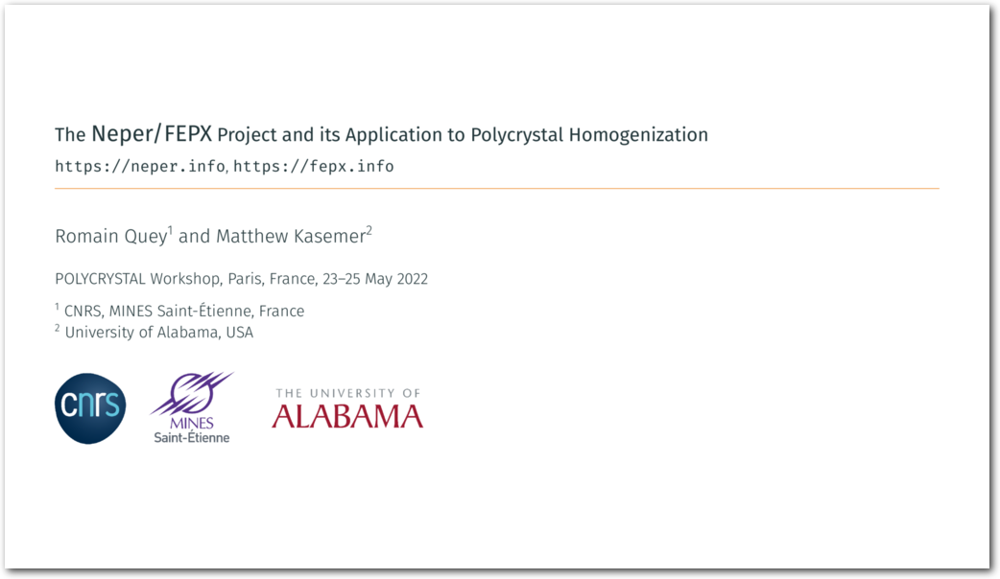

Neper
4.8.0
Features
Documentation
Tutorials
Reference Papers
Talks
2024 Talk (Neper version 4.8, FEPX version 2.0)
2022 Talk (Neper versions 4.4 and 4.5)
2021 Talk (Neper version 4.2)
Applications
Downloads
Community
Other Resources
Neper
»
Talks
View page source
Talks
2024 Talk (Neper version 4.8, FEPX version 2.0)
2022 Talk (Neper versions 4.4 and 4.5)


2021 Talk (Neper version 4.2)
(Movies removed)